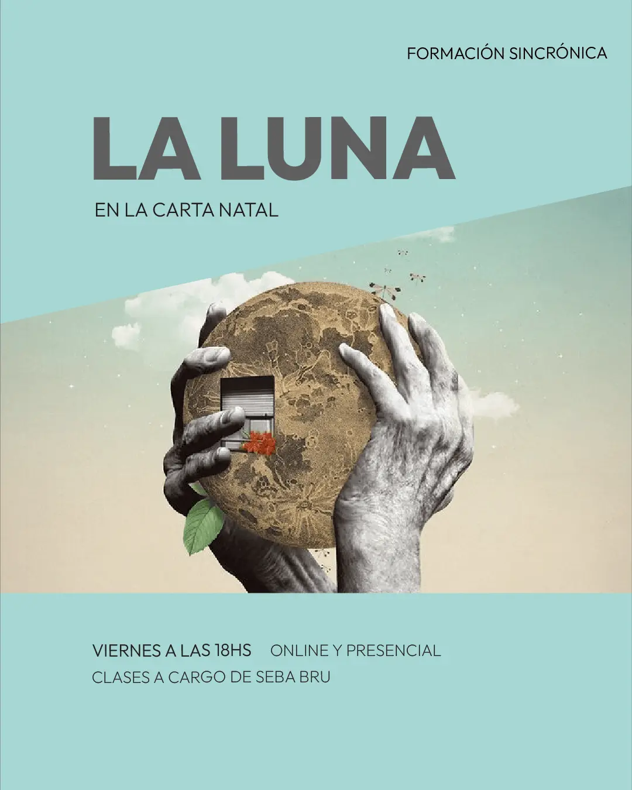
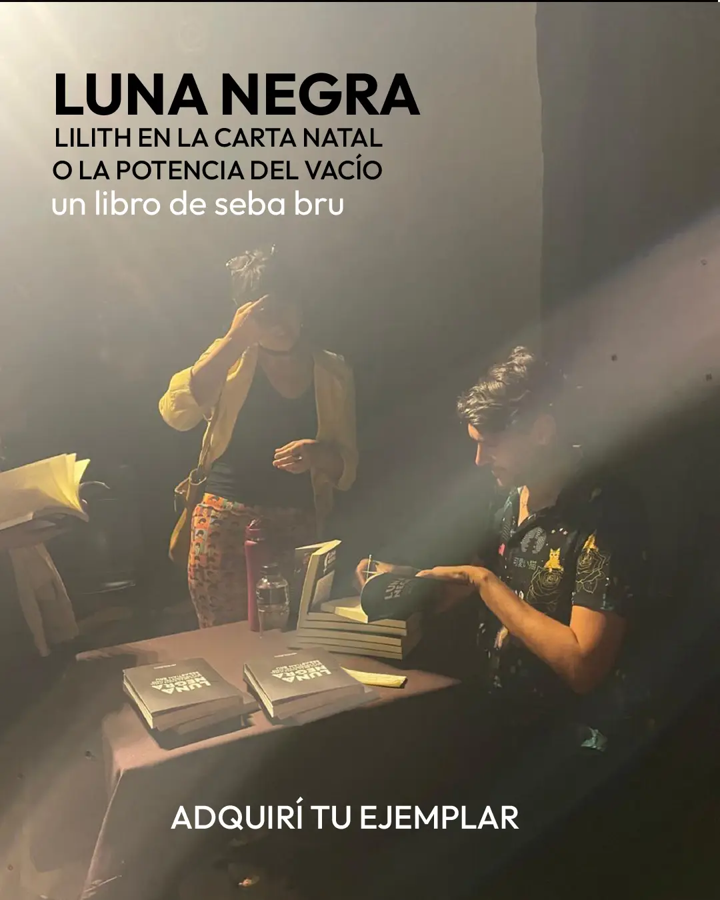
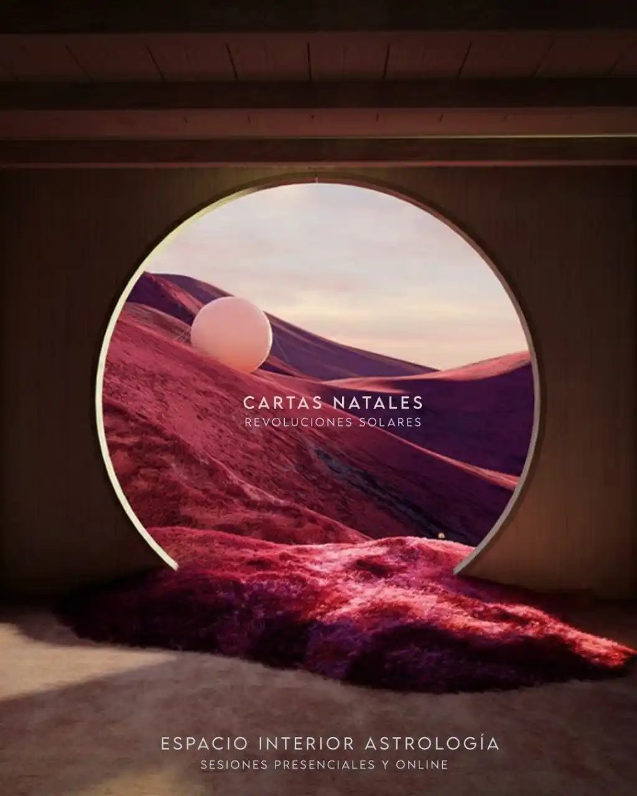
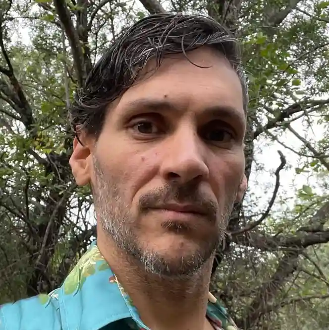
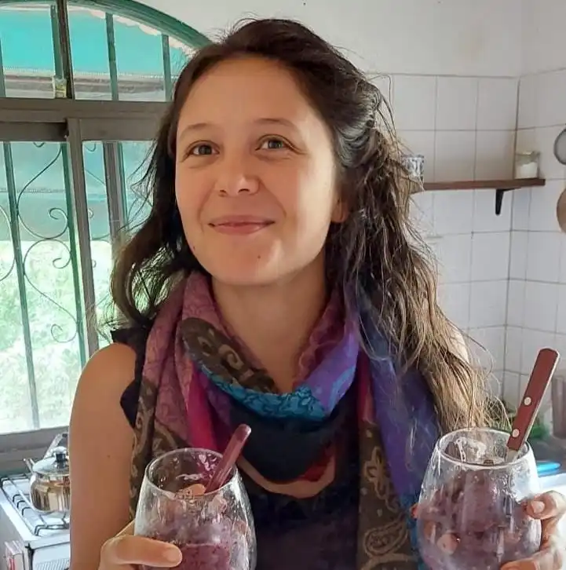

Spotify Podcast

Informes de Lunas
Cada lunación elaboro un informe que publico en Instagram, en la comunidad y también lo subo a esta página. Accedé a él de la forma que más quieras.

Una recorrida de 6 encuentros de dos horas por las 12 lunas del zodíaco.
Viernes de 18 a 20 h, a partir del 11/9.
Online o Presencial en Villa de las Rosas.
En estos encuentros buscaremos reconocer los mecanismos y las potencias de la luna en carta natal a través de un espacio teórico que abre y orienta en las particularidades de cada luna y un espacio de charla en el que compartiremos lo que nos trae.
La luna habla de nuestra forma de conseguir seguridad emocional, de los mecanismos que repito para ponerse a salvo y de las inscripciones que implica su posición en la carta natal. En dos segmentos diferenciados de la clase, abordaremos profundamente este punto para acceder a una comprensión teórica de sus particularidades en cada casa y signo; y en un segundo momento buscaremos generar un espacio de escucha sin juicio y una mirada amorosa para compartir lo que nos trae individualmente esta información.
Son 6 encuentros de 2 horas, los viernes de 18 a 20 h, a partir del viernes 11/9.
Un pago de $80.000 o dos cuotas de $45.000.
Promo: anotate con tu amig@ y tenés un 20% de descuento.
Un pago de $64.000 o dos cuotas de $36.000 cada unx.

Luna Negra, Lilith en la carta natal o la potencia del vacío, es un libro que busca hacer contacto con nuestro registro sensible y con nuestro cuerpo, al tiempo que brinda herramientas para comprender la importancia de la fuerza misteriosa de este punto astrológico. Recoge herramientas del psicoanálisis y de la psicología sistémica para abordar la complejidad de este punto en toda su extensión.
Señala un espacio donde se abre un profundo contacto con el inconsciente, en su dimensión más corporal. En este lugar misterioso resuenan ecos de las memorias del linaje, ausencias que se vuelven agujeros negros alrededor de los que orbitamos tratando de resolver lo imposible. Pero también señala el hueco por el que nos atraviesa la fuerza de la vida, componiendo una subjetividad deseante.
Páginas: 290 | Formato: 15 x 22
Precio: $35.000 / USD 30
Podés adquirir el libro en Argentina escribiéndonos por WhatsApp para coordinar la entrega a un precio con descuento de $30.000. Lo entregamos en Buenos Aires y en Rosario de momento (estamos sumando otros puntos), y por correo a todo el país.
También podés buscarlo en las librerías:
algunos contenidos para que la astrología sea parte de tu vida cotidiana
Los acontecimientos celestes pueden ser el ruido que enturbia nuestra vida o la melodía que nos permite improvisar. En este podcast semanal voy a intentar describir el cielo para invitarte a mirar de otro modo lo que te pasa.
Si todo sale bien, además del análisis de tránsitos semanales haré algún que otro contenido más imperecedero para acompañarte en los días de la vida.
"Improvisar es unirse al mundo, confundirse con él."
— Deleuze y Guattari.
Cada lunación elaboro un informe que publico en Instagram, en la comunidad y también lo subo a esta página. Accedé a él de la forma que más quieras.
somos huellas en la arena del tiempo, y tu carta natal es el mapa de esa huella

La carta Natal es un mapa del cielo en el momento en el que nacemos. Es una fotografía de cómo estaban los planetas y las estrellas en ese preciso instante. Mirando ese mapa, podemos entender las energías disponibles para nosotros, nuestras fortalezas, desafíos y propósitos de vida.
Somos el eco de ese momento en el que nacemos. La carta natal nos permite reconocer ese patrón energético, aceptarlo y transformarlo. Es una herramienta poderosa para el autoconocimiento y la evolución personal.
En una consulta astrológica hay una gran búsqueda: acompañar los procesos de quien consulta. La astrología nos brinda un lenguaje simbólico que nos permite comprender lo que nos sucede. Es una guía para reconocer patrones, entender nuestro potencial y transitar desafíos con mayor conciencia.
Exploramos juntos tu carta natal, tus inquietudes y los temas que te resuenan. La idea es que te lleves claridad y herramientas para navegar tu camino. Es un espacio de escucha activa y reflexión profunda, donde la astrología se convierte en un puente hacia tu interior.
Las consultas duran entre una hora y media y dos horas, e incluyen el registro de un audio y una imagen digital de tu carta.
El tiempo de espera aproximado para una sesión es de entre una y dos semanas. El valor de las sesiones es de 100.000$ u 80 dólares.

Es astrólogo y tarotista desde 2015. Escribe, enseña y divulga astrología.
En medio de un tránsito de Neptuno a su Sol, aprendió astrología en un tiempo imposible, y encontró allí su verdadera lengua materna. Desde entonces se dedica a estudiar, investigar y enseñar astrología, además de ejercer el oficio de astrólogo a través de consultas. En 2025 vio la luz su primer libro de astrología, sobre la Luna Negra.
Nació en Buenos Aires el 1 de marzo de 1984. Cursó estudios secundarios orientados en química y luego derivó hacia la psicología y la sociología, cursando sus estudios en la Universidad de Buenos Aires, sin completar las carreras de grado.
En el 2008, fundó un proyecto editorial en el que trabajó hasta el 2015, año en que comienza a dedicarse a la astrología. Escribió varios libros de poesía y tres novelas breves que editó en editoriales independientes de Buenos Aires entre el 2010 y el 2014.
Desde el 2018, y a pedido de una editorial chilena, comenzó a escribir informes para cada luna llena y luna nueva en los que continuó desplegando su afinidad con la escritura. Desde el 2022 comenzó un podcast de astrología que actualmente se emite en formato semanal. Además de la astrología, continúa leyendo el tarot y cada tanto abre formaciones. Abre registros akáshicos (y da iniciaciones) e investiga la cábala.

Nacida el 22 de mayo de 1991 en Corral de Bustos, Córdoba, le apasiona la búsqueda del bienestar y la gestión de proyectos. Con experiencia en yoga, terapias holísticas y alimentación natural, ha compartido prácticas y conocimientos en Rosario, Santa Fe, y actualmente reside en el Valle de Traslasierra, Córdoba.
Es la fundadora de Soul Experiences: una productora de eventos holísticos que organiza retiros, viajes y celebraciones para conectar con la esencia y profundizar en el autoconocimiento.
Actualmente, se desempeña como administradora en Viva Traslasierra, asiste a líderes de emprendimientos como Seba Bru y Cecile de La Herborista Azul, y también lidera su propio proyecto de administración de emprendimientos y asistencia de proyectos, enfocándose en la calidad del servicio, el crecimiento sostenible y la eficiencia operativa.
el oficio de mirar el cielo: herramientas para acompañar nuestros procesos más profundos.
Esta escuela tiene las puertas abiertas aunque sepas mucho, poquito o nada.
Si estás con ganas de hacer crecer tu conocimiento astrológico, acá se comparte con profundidad y sensibilidad.
Podés empezar a estudiar signos, casas y planetas, profundizar con nuestros seminarios o adentrarte en la investigación de los tránsitos astrológicos.
Podés estudiar sincrónicamente o en videos a demanda.
Podés hacerlo a tu ritmo, siguiendo el ritmo de cursada de cuatro años, o entrando y saliendo todas las veces que quieras.
En esta escuela te escuchamos y te entendemos, estamos cerca para acompañar tu desarrollo individualmente y favorecemos el tejido grupal.
para acompañar tu formación.
Autoconocimiento & formación.
La Luna habla de nuestra forma de conseguir seguridad emocional, de los mecanismos que repetimos para construirla, y del modo en el que podemos dejar de hacerlo. En este espacio vamos a hacer una recorrida por las doce Lunas del zodiaco, intentando comprender profundamente cada una en al menos tres dimensiones centrales. Por un lado, la Luna implica una reacción emocional, un mecanismo que se gatilla para preservarnos pero que muchas veces nos trae dolores de cabeza e incomodidad, lograr hacer conscientes estos mecanismos trae un profundo alivio. Por otro lado, estudiar esta luminaria nos permite registrar nuestras necesidades emocionales y encontrar entonces los recursos saludables con los que podemos satisfacer esa necesidad, comprendiéndonos amorosamente en lo que nos hace falta. Finalmente, también veremos los talentos que implica esa dimensión, las potencias que se despliegan desde ese espacio de intimidad que cada Luna representa.
Estudiar la Luna nos permite comprender cómo vimos a nuestra madre, cómo vivimos nuestra historia, cómo se ordena la memoria. En este punto podemos encontrarnos con cosas propias que reconoceremos de inmediato y que nos permitirán ampliar al mismo tiempo la mirada sobre lo que fuimos y lo que somos, sobre lo que nos pasó y sobre todo, cómo entendimos lo que nos pasó.
Este taller abre un espacio para darnos cuenta de lo que nos pasa, pero a la vez nos da recursos para registrar a lxs demás en su singular modo de sentirse segurxs y a salvo.
🕜 Son 13 encuentros de una hora cada uno.
🎓 Al finalizar el curso vas a comprender mejor tus mecanismos emocionales, y vas a entender con más profundidad a tus amigxs, familiares y a tus consultantes y pacientes.
📚 Incluye bibliografía complementaria y el acceso es permanente.
En este curso de un año aprenderemos a leer las influencias y los acontecimientos que producen los planetas en tránsito por el cielo. Veremos de qué forma la serie de tránsitos que alguien está atravesando hará poner de relevancia ciertos temas, ciertas necesidades y preocupaciones. Veremos también formas de acompañar a quienes atraviesan esos tránsitos.
En un primer movimiento, vamos a aprender a obtener la información de los tránsitos que vive una persona, como verlos en las distintas plataformas disponibles, que software recomiendo y cómo hacerse de esa información. Luego vamos a analizar los tránsitos de los planetas en su pasaje por las casas de una carta; veremos qué van trayendo a nuestra vida a través de determinadas experiencias y acontecimientos. También analizaremos las transformaciones que producen en nuestra vida los planetas transpersonales al pasar por las casas de una Carta Natal y al hacer aspectos con los planetas natales.
Para más información comunicate con Clari al 📲 http://wa.me/5493544559877
Son un total de 14 encuentros los sábados a las 11h. Incluye materiales de lectura complementarios y accesos a las clases grabadas.
Venimos escuchando y viendo que muchas de las personas que nos siguen se ven forzadas a ajustar sus consumos no esenciales. En vistas de esto, el precio que te paso a continuación es para que sepas cuánto considero que vale el curso, y lo tomes como una referencia; pero el intercambio está sujeto a tu realidad económica. La idea es que el dinero no sea un impedimento, sino un medio de intercambio.
$160.000 | 160u$s (o 4 cuotas de $45.000)
Para inscribirte completá el siguiente formulario:
En este seminario abordaremos este punto desde una perspectiva mítica y astronómica. Veremos su funcionamiento dentro de la carta natal, cómo pensarlo y cómo utilizarlo en una lectura.
La Luna Negra trabaja sobre lo negado, lo que no tiene palabras. Algo que, profundamente oculto, opera en la conformación del psiquismo. Las amenazas de las que nos defendemos, los miedos que emergen de lo profundo de nuestro interior, aquello que está en un inconsciente siempre ciego. Pero también sobre las pasiones viscerales, los movimientos que no controlamos, corporales, animales, que emergen también acercándonos al placer y a la fuerza.
La rebeldía de la luna negra nos permite encontrarnos con la tierra, lejos de los anhelos de volver al edén, al útero de nuestra madre, y con la fuerza para alcanzar y sostener nuestro deseo.
Lilith nos permite ir más allá de la fuerza que nos lleva a repetir tradiciones de nuestra historia familiar para permitirnos encontrar una realidad que le da lugar a lo que somos. En ese sentido, será un gran indicador de desórdenes, secretos y mentiras familiares.
📖 No se requieren conocimientos previos.
📅 Comienzo de cursada: 24 de Mayo
Las clases quedan grabadas para repasar o por si algún sábado no podés venir.
La cursada estará a cargo de Sebastián Bru.
La cursada será del sábado 24/5 al 28 de Junio.
Un pago de 60u$s | 60000$
(si se te complica el intercambio escribinos y vemos cómo hacertela más fácil)
Para inscribirte completá el siguiente formulario:
Un seminario para elaborar la relación entre la carta natal y la familia de orígen.
El mapa del cielo nos habla de nuestra esencia, pero ¿qué nos dice de la sustancia con la que esa esencia se vuelve real, tangible, humana?
Incorporando nuevos sentidos a la interpretación de las casas astrológicas podemos acompañar nuestras lecturas de cartas natales con una información que ahonde en la familia y en las raíces ancestrales. El objetivo del seminario es ampliar los recursos en nuestra mirada para identificar las recurrencias y sobrecargas que arrastramos de nuestro árbol y que se evidencian en la carta natal; así como los talentos y las potencias que deja a nuestro alcance nuestro origen familiar. ¿Cómo nos sostiene nuestra tierra y qué sostenemos de nuestros antepasados? ¿Qué desórdenes podemos identificar en nuestra relación con el clan?
Serán cinco encuentros de 2 horas, los sábados 20 y 27 de Septiembre, 4, 11 y 18 de Octubre, de 15 a 17 hs
Vamos a trabajar diferentes indicadores y modos de pensar y evaluar la relación con la familia y la posición que ocupamos en el linaje. Abordaremos una mirada profunda sobre los personajes de la familia y cómo encontrar los puntos pegados o sobrecargados en la memoria familiar. Nos detendremos especialmente en los vínculos fundamentales con la madre y el padre, diferenciando a los personajes y sus particularidades con la función psíquica con la que se relacionan; ensayando modos de separar la función de los personajes. La cursada estará a cargo de Sebastián Bru.
Linaje: 60u$s | 65000$
Plutón es uno de los planetas transpersonales que marca profundamente nuestra experiencia en esta vida. Dentro de nuestra carta natal, señala un punto por donde entramos en contacto con una enorme intensidad desbordante. El potente magnetismo de este punto astrológico puede causarnos un profundo rechazo y una fascinación extraordinaria, pero es muy difícil sentir desinterés. Representa el inconsciente, el vínculo con mi linaje y mi clan y la relación con la muerte y la sexualidad entre muchas otras cosas que abordaremos en este seminario.
Los nodos lunares están en una relación estrecha con los eclipses y señalan en nuestra carta natal un lugar en donde escucharemos una llamada profunda de nuestra alma. Entre Plutón y los nodos, podemos encontrar información valiosa para entender hacia dónde nos convoca a avanzar la fuerza misteriosa de la vida.
Este seminario está destinado a personas con conocimientos básicos de astrología y es parte de nuestra formación. Durante este curso, incorporarás conocimientos que te permitirán profundizar la lectura y la interpretación de una Carta Natal. Al finalizar el curso, entenderás con más profundidad una carta natal y podrás ver dinámicas de transformación que atraviesan a todas las personas.
Son 8 encuentros de dos horas, y materiales complementarios para que te acompañes a entender en profundidad estos puntos.
El intercambio incluye:
Un pago de 100.000 $ar / 100€ / 110$ o dos cuotas de 55.000 / 55€ / 60$
(consultá facilidades de pago y financiación)
Abordaremos a Neptuno, Quirón y Urano como puertas de acceso al funcionamiento de la psiquis desde una perspectiva astrológica.
En este ciclo de seminarios nos introducimos en los misterios de nuestro sistema psíquico, abordando estos tres planetas transpersonales. Haremos una aproximación profunda a cada uno de los puntos, y en su conjunto buscaremos construir una serie de recursos conceptuales y técnicos que nos permitan abordar y acompañar, con mayor profundidad, una consulta astrológica.
Trabajaremos con este planeta desde una perspectiva mítica y astronómica. Veremos su funcionamiento dentro de la carta natal, cómo pensarlo y utilizarlo en una lectura, y cómo reconocer su importancia relativa en una carta. El eje central del seminario será estudiar su participación en la construcción del psiquismo.
Neptuno nos permite acceder a los elementos que se repiten en la experiencia de un sujeto, y a la vez nos permite encontrar la puerta de entrada para ir desde la repetición y el anhelo hacia el deseo y la presencia.
Una de sus funciones principales es ayudar a conformar una identidad que nos permita atravesar los primeros pasos en la vida. Este cuerpo celeste habla de nuestro registro del paraíso perdido, de la vida intrauterina; y desde esa memoria, también dirá qué anhelamos recuperar y dónde podemos lograr encontrarnos reunidos.
Trabajaremos con este asteroide desde una perspectiva mítica y astronómica. Veremos su funcionamiento dentro de la carta natal, cómo pensarlo y utilizarlo en una lectura, y cómo reconocer su importancia relativa en una carta.
Quirón nos dice que la condición humana incluye una herida, que el propio hecho de nacer es tener una herida, un hueco, algo que falta. Este asteroide también nos dice cuál es la explicación que le damos a eso: por qué nos falta lo que nos falta y nos duele lo que nos duele. Quirón marca, entre otras cosas, el gesto que haremos por recuperar lo perdido, para evitar la herida. El camino que emprendemos para sanar nuestras heridas nos permite encontrar nuestra maestría. En su posición en la carta encontraremos una información muy valiosa a la hora de pensar cómo se construye la identidad y las defensas emocionales.
Integrándolo a la lectura con Neptuno y con la luna negra, este asteroide nos permite ver con claridad la forma en la que se construyen y se sostienen los mecanismos psíquicos que nos permiten sobrevivir, y la forma en la que podemos acompañar una apertura a la vida.
Trabajaremos con este planeta desde una perspectiva mítica y astronómica. Veremos su funcionamiento dentro de la carta natal, cómo pensarlo y utilizarlo en una lectura, y cómo reconocer su importancia relativa en una carta.
En este último trayecto, trabajaremos con cartas de ejemplo para poner en práctica lo que vimos en los seminarios anteriores.
El funcionamiento conjunto de Neptuno, Quirón y Urano nos permite entender con más profundidad una carta natal.
Las clases quedan grabadas para su repaso o por si algún día no podés asistir.
Valores:
9 encuentros: $60.000 | 60u$s
(o 3 cuotas de 240000)
Incluye materiales de lectura complementarios y accesos a las clases grabadas.
Para inscribirte completa el siguiente formulario:
En este taller haremos un recorrido por los arcanos mayores y menores del mazo Rider Waite en el que aprenderemos a leer los diferentes símbolos a través de los que las cartas nos hablan.
La intención del taller es habilitar una iniciación a la lectura de las cartas de un modo dinámico y abierto, que nos permita habilitar la intuición y entrelazarla al saber.
Trabajaremos algunos conceptos fundamentales de la cábala y el esoterismo que sostiene el contenido del mazo. El taller tendrá un recorrido por los 22 arcanos y luego una parte práctica para poner en juego lo aprendido. Abordaremos las diferentes tiradas, y cómo leer el diálogo entre las cartas.
Son un total de 12 Encuentros a través de videos de clases dictadas por Seba Bru.
Para inscribirte completa el siguiente formulario:
En este curso te acercamos los conceptos fundamentales para entender un poco más tu identidad desde la mirada amorosa de la astrología.
Tu Sol habla del modo de expresar tu esencia, y en este curso lo abordamos desde la comprensión de la función del Sol en la carta natal y desde una aproximación profunda a la energía del signo en el que está en tu carta. ¿Qué te invita a trabajar tu energía Solar? ¿Qué recursos podés encontrar para hacerlo?
Tu luna habla de aquello que te da seguridad emocional, de lo que te acerca la sensación de hogar, de la memoria y de lo que se afectiviza. En este curso te acercamos la posibilidad de mirarte desde otra distancia para entender mejor lo que te da seguridad y lo que te ata, lo que te encierra y lo que te sostiene.
Tu ascendente es un desafío, una energía que te invita a desplegarte en lugares nuevos y de modos nuevos. En este curso, te compartimos una mirada que te permite entender dónde encontrás seguridad, a qué tendes a resistirte, y cuál es el punto de menor resistencia para ir hacia vos mismx.
5hs de Video + Encuentro sincrónico de síntesis.
Este curso será a través de videos de clases dictadas por Seba Bru en los que se describe la dinámica del ascendente, la función del sol y de la luna en la carta, y lo que trae para vos tu sol, tu luna y tu ascendente. Serán un total de 5 horas de clases y tendrás disponibles materiales de lectura complementarios.
El encuentro de síntesis será grupal, con horarios que iremos coordinando.
En nuestra carta, el Sol es el encargado de expresar lo que somos, de darle un lugar en el mundo a nuestra esencia a través del filtro de nuestro signo solar.
El abordaje de tus energías solares será facilitado por dos videos. En el primero, veremos en profundidad la función del sol en la carta natal, en el segundo, veremos de qué se trata la energía del signo en el que está a través de un video en el que te acompañará una visualización y un desarrollo teórico que te permite mirarte con otros ojos.
El abordaje de esta energía en tu carta natal surge de un curso dictado por Seba Bru el 2024.
Sobre el taller de lunas:
La luna habla de nuestra forma de conseguir seguridad emocional, de los mecanismos que repito compulsivamente, y del modo en el que puedo dejar de hacerlo. En este espacio vamos a hacer una recorrida por las doce lunas del zodiaco. La intención es ir reconociendo en cada luna algunos mecanismos emocionales y los recursos con los cuales podemos producir seguridad.
Este taller abre un espacio para darnos cuenta de lo que nos pasa, para advertir nuestras repeticiones y las necesidades emocionales que necesitamos atender; pero a la vez nos da recursos para registrar a lxs demás en su singular modo de sentirse segurxs y a salvo.
Vamos a trabajar con tu ascendente desde un curso dictado por seba en el 2023.
Nuestro ascendente señala una energía que nos resulta difícil y desafiante, que nos confronta con algo que preferimos evitar, pero que en su incorporación encontramos algo valioso. La vida nos traerá, una y otra vez, la energía de este signo zodiacal para que aprendamos a reconocernos en ella. Dentro de este curso, describiré la dinámica general del ascendente y la dinámica específica para cada signo zodiacal.
El intercambio incluye:
30000$ar / 30u$d
En este curso abordaremos la función que cumple cada planeta y luminaria (Sol y Luna) en la carta natal y haremos una introducción a los aspectos astrológicos. Trabajaremos los mitos, las funciones psíquicas y los arquetipos con los que se asocia cada uno, y la forma de mirarlos en una carta natal. Serán abordados a través de visualizaciones que nos permitan encontrarnos con la esencia de la energía de cada uno de ellos de forma didáctica y sencilla, pero al mismo tiempo profunda.
La modalidad de cursada incluye 14 clases teóricas de 2hs cada una y 12 encuentros prácticos para hacer preguntas y compartir la experiencia de la cursada de una forma más abierta y relajada.
Es recomendable tener una base de signos y casas, pero también es posible cursar primero este semestre y luego estudiar signos y casas. Podés consultarme si tenés dudas.
Este curso es parte de nuestra formación, podés consultar el programa completo si te interesa.
La cursada estará a cargo de Sebastián Bru.
Venimos escuchando y viendo que muchas de las personas que nos siguen se ven forzadas a ajustar sus consumos no esenciales. En vistas de esto, el precio que te paso a continuación es para que sepas cuánto considero que vale el curso, y lo tomes como una referencia; pero el intercambio está sujeto a tu realidad económica. La idea es que el dinero no sea un impedimento, sino un medio de intercambio.
14 encuentros teóricos y 10 encuentros prácticos de una hora: $180.000 | 160u$s (o 4 cuotas de $50.000)
Incluye materiales de lectura complementarios y accesos a las clases grabadas.
Para inscribirte completá el siguiente formulario:
En este espacio trabajaremos la construcción de la estructura psíquica desde una perspectiva astrológica y sus posibles formas de reelaboración a lo largo del tiempo. Veremos los ciclos conjuntos de estos puntos astrológicos y recorreremos las claves del proceso de construcción de identidad.
Abordaremos la función materna y la función paterna y la relación entre los personajes, las funciones y esos puntos astrológicos.
Podés cursar este seminario a tu ritmo a través de videos
Un pago de $50.000 | 50 u$s
Para inscribirte completa el siguiente formulario: